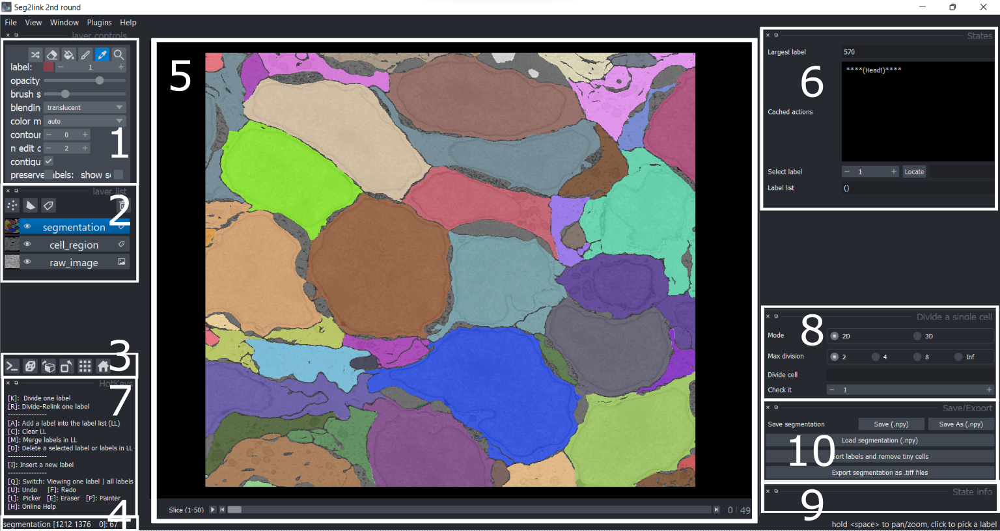

Panels description
Panels

Panels 1, 2, 3, 5, 7, and 9
See descriptions of in round 1.
4. Current layer [cursor position] selected label
Together with the Localize function, the information of cursor position here can assist users in locating a cell.
6. States
Four types of information/functions are shown here:
- The largest cell ID in current segmentation result.
- The cached states that can be retrieved with undo/redo.
- Select a cell ID and locate its position. See Localize
- The contents of the label list, used in Merge and Delete
8. Divide a single cell
- Mode
- 2D: Divide / Divide-Relink a cell in a specific slice.
- 3D: Divide a cell in 3D space.
- Max division
- Only used in 2D mode.
- The max number of cells allowed in the division result.
- If more cells are obtained, smaller cells will be merged with nearby cells.
- Inf means no limitation of the cell number.
- Divide cell
- Show information of division result.
- Check it
- Select a cell in the division result and jump to the slice containing its center.
10. Save/Export
- Save segmentation
- Save: Save the current result as seg-modified.npy.
- Save as: Save the current result with a custom filename.
- Load segmentation
- Load the segmentation result saved as npy format.
- Sort labels and remove tiny cells
- Export segmentation as .tiff files